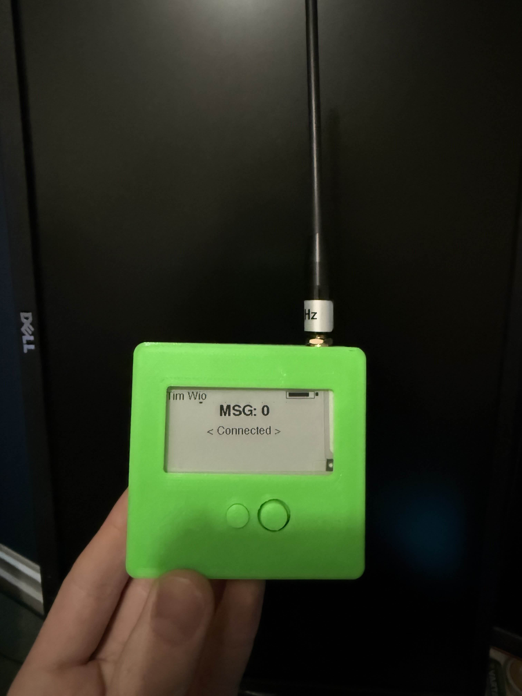
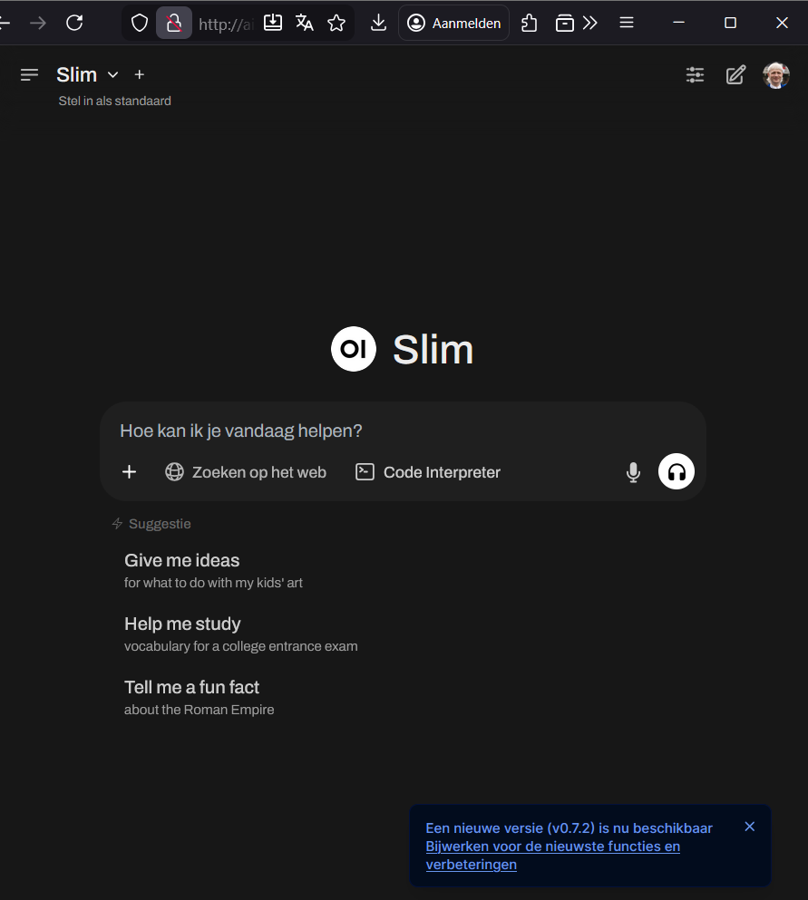

De afgelopen tijd ben ik veel bezig met LoRa, specifiek MeshCore. Ik heb nu een handheld gemaakt en een behuizing voor ge3dprint en kan nu met heel veel mensen communiceren via dat apparaatje. Zie foto hieronder.

Ik vind het ook erg leuk om met Linux te werken en om daar enkele dingen op te hosten. Zo hosting ik meerdere game server, maar ook een LLM systeem met web interface zoals die van chatgpt. Zie foto hieronder.
